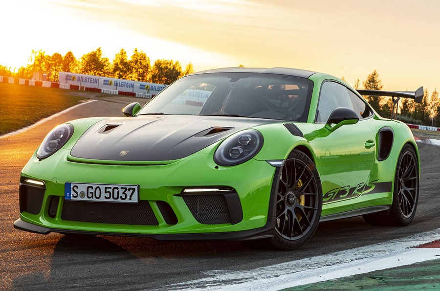
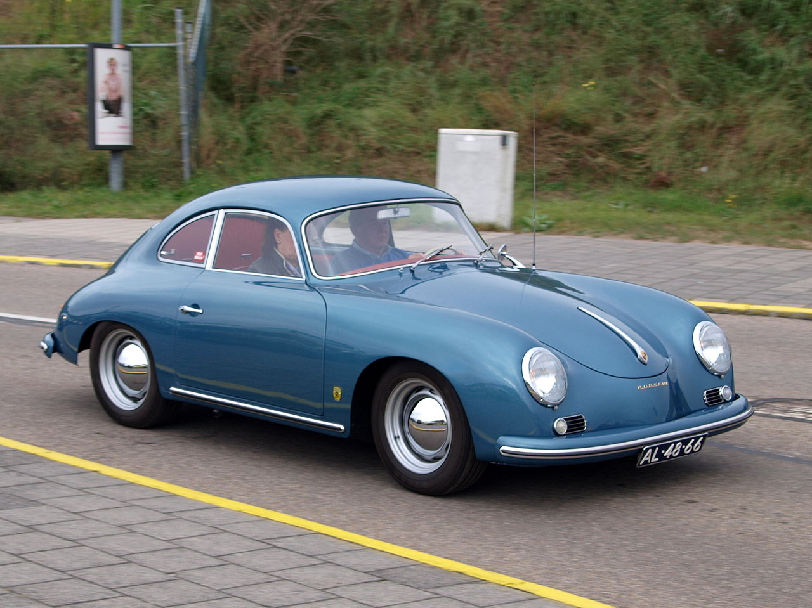
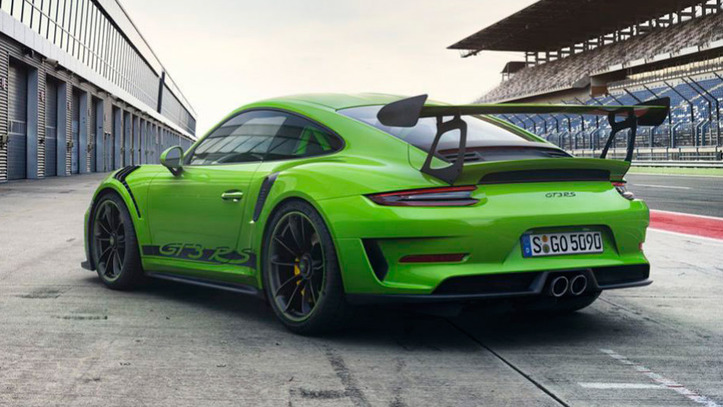
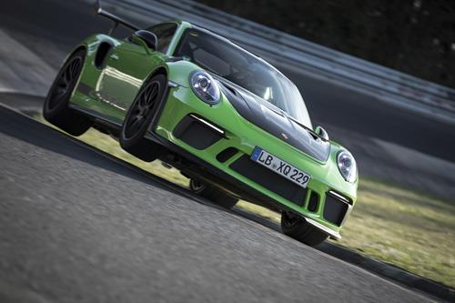
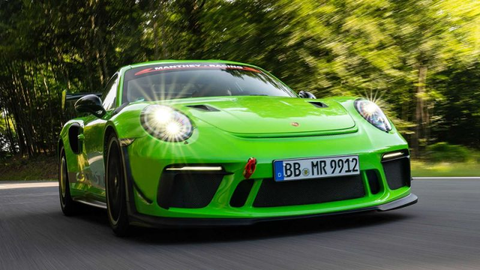

♥【Ｐｏｒｓｃｈｅ ９１１ ＧＴ３ ＲＳ】♥
𝓛𝓪 𝓑𝓮𝓼𝓽𝓲𝓪 𝓭𝓮 𝓟𝓸𝓻𝓼𝓬𝓱𝓮

El Porsche 911 GT3 RS es un coche creado por la marca Alemanya automovilistica Porsche, fundada en el año 1931 por Ferdinand Porsche y Ferry Porsche.
Los Fundadores de Porsche:
Ferdinand Porsche:
Nacido en Maffersdorf el 3 de septiembre de 1875, tercero de 5 hijos de Anton Porsche, ingeniero y empresario.
 Desde adolescente se intereso por la energiaelectrica, en 1893 comenzo a trabajar en Viena en una empresa del sector eléctrico.
Ascendio rapidamente al demostrar profesionalidad, en 1898 pasó a formar parte de la division de automóviles de Jacob Hans Bonza Lohner, también en Viena.
Desde adolescente se intereso por la energiaelectrica, en 1893 comenzo a trabajar en Viena en una empresa del sector eléctrico.
Ascendio rapidamente al demostrar profesionalidad, en 1898 pasó a formar parte de la division de automóviles de Jacob Hans Bonza Lohner, también en Viena.
Ferdinand pilotó sus propios coche en carreras obteniendo algunas victorias. En 1906 se convirtio en director técnico de Austro Daimler. Ganó en 1910 la Prinz-Heinrich Fahrt ocupando la 2ª Plaza. Posteriormente fue ascendido hasta director general. En 1922 gano Targa Florio en su clase (4 cilindros y 1,1 litros)
En 1923 lo contrato Mercedes como director técnico. Se encargaba de desarrollar los motores con compresor de la marca, ganando en 1924 la Targa Florio en la clasificación, esto lo conllevo a ser nombrado doctor honoris causa en ingeniería por el Technische Hochschule de Stuttgart. Poco tiempo despues dejo su impronta en Mercedes-Benz para toda la historia, ya que se encargó del diseño de los magnificos Mercedes-Benz S, SS y SSK.
Durante la 2ª Guerra Mundial se dedico a el diseño de material bélico. Despues de la postguerra fue arrestado junto a su hijo Ferry Porsche por haber utilizado mano de obra esclava en su fábrica.
Una vez en libertad, Ferry Porsche intento recuperar la Porsche AG, ofreciendo servicios de reparaciones para vehiculos y motores de otras marcas, tambien hacia prototipos para terceros.

El Primer Modelo de la Actual marca Porsche
Ferry presentó el primer modelo de la marca Porsche, el Porsche 356.

Porsche a dia de hoy: Porsche GT3 RS
Especificaciones:
Prestaciones y consumos homologados
- Velocidad máxima 312 km/h
- Aceleración 0-100 km/h 3,2 s
- Consumo WLTP
- Combinado 13,6 l/100 km
- Velocidad baja 22,8 l/100 km
- Velocidad media 13,2 l/100 km
- Velocidad alta 11,5 l/100 km
- Velocidad muy alta 12,2 l/100 km
- Consumo estimado por km77
- Consumo urbano estimado combustión 18,5 l/100km
- Consumo viaje estimado combustión 13,4 l/100km
- Consumo mixto estimado combustión 16 l/100km
- Emisiones de CO₂ WLTP No disponible
- Normativa de emisiones Euro 6
- Distintivo ambiental DGT
Dimensiones, peso, capacidades

- Tipo de Carrocería Coupé
- Número de puertas 2
- Longitud 4.557 mm
- Anchura 1.880 mm
- Altura 1.297 mm
- Batalla 2.453 mm
- Vía delantera 1.588 mm
- Vía trasera 1.557 mm
- Coeficiente Cx No disponible
- Superficie frontal No disponible
- Factor de resistencia No disponible
- Peso 1.500 kg
- Tipo de depósito
- Gasolina 64 l
- Filtro de partículas Sí
- Volúmenes de maletero
- Volumen del maletero 125 litros
- Número de plazas 2
- Distribución de asientos 2
Motor de Combustión

- Propósito Impulsar el vehículo
- Combustible Gasolina
- Potencia máxima 521 CV / 383 kW
- Revoluciones potencia máxima 8.250 rpm
- Par máximo 470 Nm
- Revoluciones par máximo 6.000 rpm
- Situación Trasero longitudinal
- Número de cilindros 6
- Disposición de los cilindros Boxer
- Material del bloque Aluminio
- Material de la culata Aluminio
- Diámetro 102 mm
- Carrera 81,5 mm
- Cilindrada 3.996 cm³
- Relación de compresión 13,3 a 1
- Distribución
- Válvulas por cilindro 4
- Tipo de distribución Dos árboles de levas en cada culata
- Alimentación Inyección directa. Admisión Variable
- Automatismo de parada y arranque del motor ("Stop/Start") No
Transmisión

- Tracción Trasera
- Caja de cambios Automático
- Número de velocidades 7
- Tipo de mando No disponible
- Tipo de Embrague Dos embragues multidisco bañados en aceite
- Tipo de mecanismo Pares de engranajes
- Desarrollos (km/h cada 1.000 rpm)
Chasis
- Estructura suspensión delantera Tipo McPherson
- Muelle suspensión delantera Resorte helicoidal
- Estructura suspensión trasera Paralelogramo deformable
- Muelle suspensión trasera Resorte helicoidal
- Barra estabilizadora delantera Sí
- Barra estabilizadora trasera Sí
- Tipo de frenos delanteros Disco ventilado
- Diámetro de frenos delanteros 380 mm
- Tipo de frenos traseros Disco ventilado
- Diámetro de frenos traseros 380 mm
- Dirección

-Tipo Cremallera
-Tipo de asistencia Eléctrica
-Asistencia en función de la velocidad No
-Desmultiplicacion en función de la velocidad No
-Desmultiplicación no lineal Sí
-Desmultiplicación de la dirección 17,15
-Dirección a las cuatro ruedas Sí
-Diámetro de giro entre bordillos No disponible
-Diámetro de giro entre paredes 11,1 m
- Vueltas de volante entre topes No disponible
- Neumáticos delanteros 265/35 R20
- Neumáticos traseros 325/30 R21
- Llantas delanteras 9.5 x 20
- Llantas Traseras 12.5 x 21
Precio
- Precio (con descuento y equipamiento seleccionado) 224.171 €
- Descuento oficial 0 €
- Precio sin impuestos 165.135 €
- IVA 21 %
- Impuesto de matriculación 14,75 %
- Tarifa de 08/2019
CopyRight Oscar Rodriguez Linacero - M08 Aplicacions Web 2 SMX